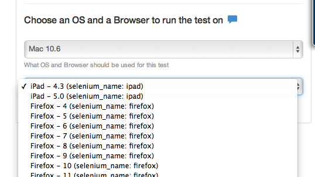

You can see a video here on using mobile. Mobile Video

If Saucelabs is enabled then you will have more choices in the menu.
Choose Mac and then iPhone or iPad. Best to use the latest iOS version or one behind since Apple tends to no cover the browser further back than that.
Choose Linux then Android